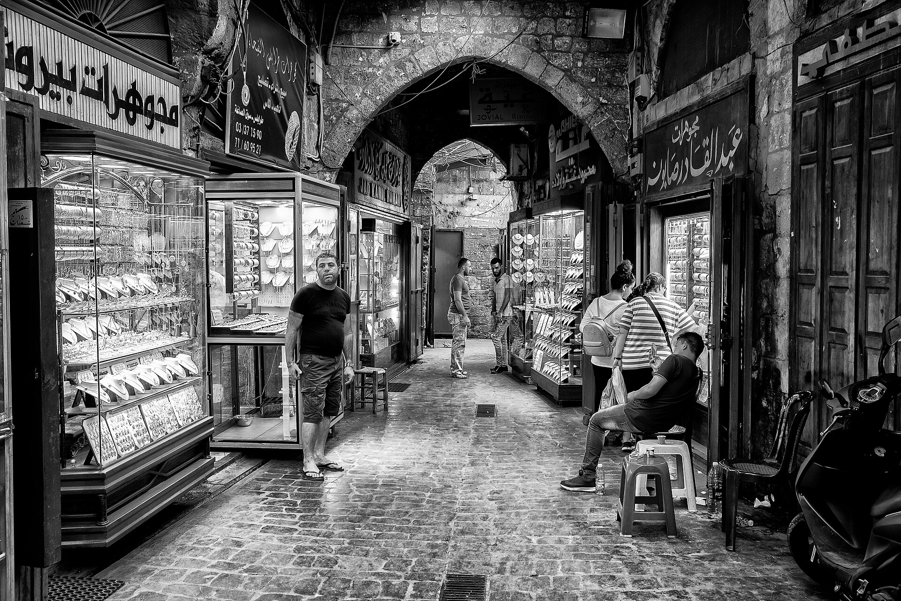
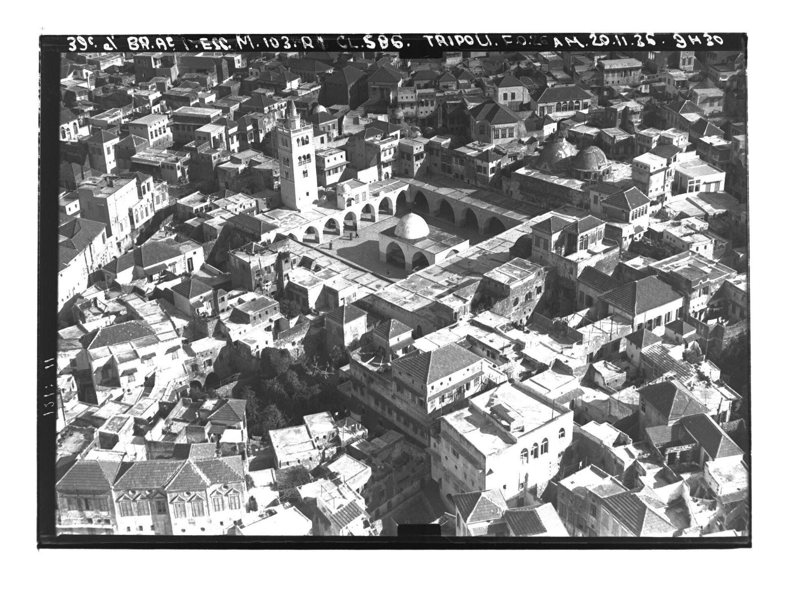
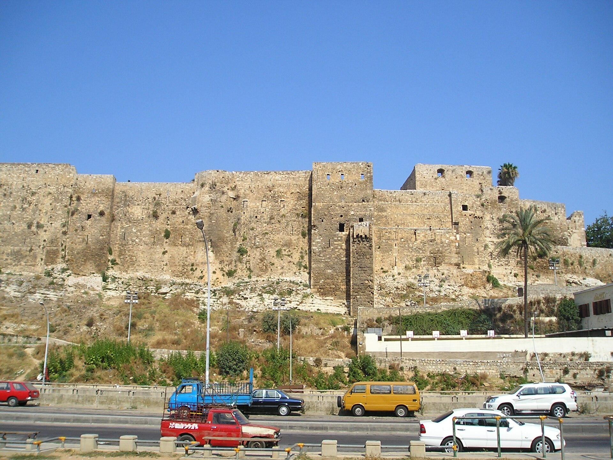
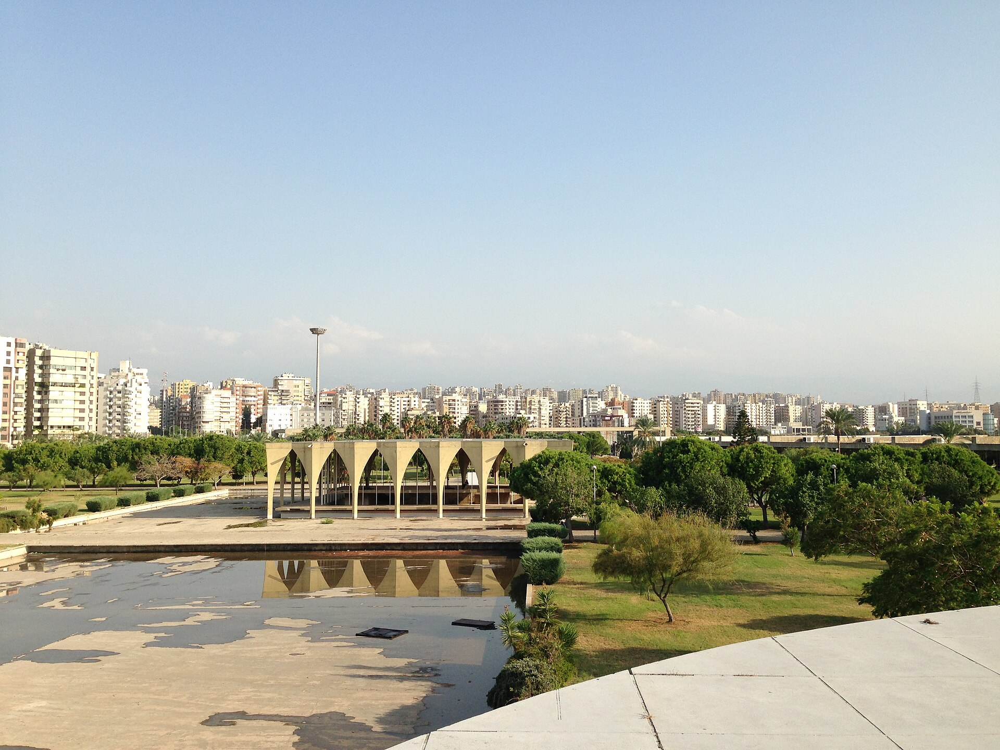

نُمثّل
نبني مساحة ديمقراطية تسمح للناس بتحديد الأولويات وصناعة القرار المدني.
إطار مستقل ينظّم مشاركة الناس، يراقب الأداء البلدي، ويحوّل المعرفة المحلية إلى حلول وحملات ونتائج قابلة للقياس.
ليس المشروع بديلاً قانونياً عن البلدية، بل مؤسسة مدنية مستقلة تمثّل صوتاً منظماً، تراقب الأداء، وتقترح حلولاً قابلة للتنفيذ.
نبني مساحة ديمقراطية تسمح للناس بتحديد الأولويات وصناعة القرار المدني.
نتابع القرارات والموازنات والمشروعات وجودة الخدمات، وننشر ما نتوصل إليه.
نحوّل التجربة اليومية والخبرة المهنية إلى بدائل عملية قابلة للنقاش والتنفيذ.
ننظم حملات سلمية ذات هدف واضح وموعد ونتيجة يمكن قياسها.
الغاية ليست منصةً تتحدث باسم الناس، بل مؤسسة يستطيع الناس من خلالها أن يتحدثوا وينظّموا ويقرروا بأنفسهم.


الثقة العامة ليست شعاراً. تُبنى من خلال قواعد واضحة تُطبق على القيادة والأعضاء والتمويل والتحالفات.
لا سيطرة حزبية أو عائلية أو تجارية أو تمويلية على القرار.
للأعضاء صوت في تحديد الأولويات ومراجعة القيادة ومحاسبتها.
نشر مصادر التمويل والمصروفات والمحاضر وتعارض المصالح.
تنظيم قائم على المكان والمصلحة المشتركة، لا على الانقسام أو الزبائنية.
نتحقق، نوثق، نمنح حق الرد، ونفرّق بين الوقائع والاستنتاجات.
لكل حملة مسؤول وهدف رقمي وموعد ومراجعة علنية للنتيجة.

أي إصلاح جدي يبدأ من فهم العلاقات بين الأحياء والناس والخدمات والمؤسسات.
تبدأ المبادرة بحملة استماع لمدة ستة أسابيع. هدفها اكتشاف المشكلات كما يعيشها الناس، والعلاقات التي تحرّك المجتمع، والقيادات القادرة على بناء فرق.
ما الذي يربط الشخص بطرابلس؟ وما التجربة التي جعلته يهتم بالشأن العام؟
ما المشكلة اليومية؟ من يتأثر بها؟ ولماذا بقيت بلا حل؟
ما المعرفة والمهارات والعلاقات والوقت التي يستطيع الشخص تقديمها؟
تنتهي المحادثة بخطوة محددة: لقاء، دعوة أشخاص، جمع معلومة أو قيادة مهمة.
تتوسع المبادرة عبر فرق مترابطة، لا عبر شخص مركزي أو مجموعة مراسلة ضخمة. كل مستوى يعرف صلاحياته ومَن يحاسبه.
تقرّ الميثاق والأولويات، تراجع التقارير، وتنتخب القيادة وتحاسبها.
تنفذ القرارات وتنسق الفرق والموارد والتمثيل العام.
تستمع وتوثق وتنظم السكان وتتابع المطالب محلياً.
تحلل المعلومات وتعد البدائل وتقيس الأداء البلدي.
قرارات، إنفاق، مشتريات، ومعلومات متاحة للناس.
طرق، أرصفة، إنارة، وصول شامل، ومساحات عامة.
نفايات، مياه، نهر، تشجير، ومؤشرات جودة.
سير، نقل، عبور مشاة، ومواقع خطرة.
الأسواق التقليدية والمؤسسات الصغيرة والفرص المحلية.
المدينة القديمة، المعرض، الذاكرة، والاستخدام العام.
إتاحة عادلة للمرافق والمعلومات والبرامج البلدية.
قواعد القرار، تضارب المصالح، الشكاوى، والمحاسبة.

يمكن للمؤسسة المدنية أن تجمع حماية الذاكرة مع ابتكار حلول للمستقبل.
لا نبدأ بـ«إنقاذ طرابلس» أو «إنهاء الفساد». نختار نتيجة محددة تؤثر في الحياة اليومية، يملك شخص أو جهة قرارها، ويمكن تحقيق تقدم فيها خلال ثلاثة إلى ستة أشهر.
اجمع بيانات وشهادات وصوراً قابلة للتحقق وحدد المسؤولية.
اطلب المعلومات والاجتماع، وقدم حلاً واضحاً مع موعد مطلوب.
ابنِ وفداً من المتأثرين، وزّع المهام، واطلب التزاماً مكتوباً.
منتدى عام، تقرير متابعة، حملة علنية، أو وسيلة قانونية عند الحاجة.
حوّل الالتزام إلى خطوات ومسؤولين ومهل، ثم تابع التنفيذ.
قيّم النتيجة، أعلن ما تحقق وما لم يتحقق، وطوّر الجولة التالية.
اكتب العناصر الأربعة. ستظهر صيغة موحدة يمكن نسخها ومناقشتها.
تُراجع الأرقام بعد شهر الاستماع الأول. الأولوية لجودة العلاقات والالتزام، لا لتضخيم العضوية بسرعة.
ضع علامة عند إنجاز كل خطوة. تُحفظ القائمة على هذا الجهاز تلقائياً.
الحضور الرقمي وسيلة للتواصل. النجاح الحقيقي يظهر عندما يلتزم الناس، يطوّرون قيادات أخرى، ويحققون نتيجة عامة.
اضغط على أي صورة لمشاهدتها بحجم أكبر. تُحفظ نسب الصور ومصادرها في أسفل الصفحة.
عُرضت الصور بقصّ بصري ملائم للتصميم من دون تغيير جوهري في محتواها.